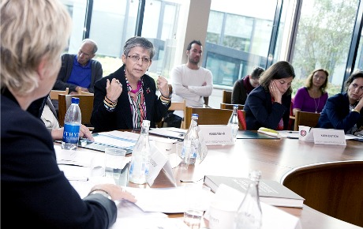

پذيرش > تریبون > دمکراسی در عراق بدون احقاق حقوق زنان میسر نخواهد بود

 دمکراسی در عراق بدون احقاق حقوق زنان میسر نخواهد بود دمکراسی در عراق بدون احقاق حقوق زنان میسر نخواهد بود
29 شهریور 1390 - ترجمه: شهرزاد امین - نسخه قابل چاپ
تغییر برای برابری: تارنمای سوئدی پرسپکتیو فمینیستی در دیداری با هناء أدور مسئول سازمان زنان عراقی العمل نظرات وی را در مورد وضعیت کنونی زنان عراق جویا شد.
بر اساس تحقیقاتی که سازمان زنان العمل در سال 2008 انجام داد زنان به تنهایی نان آور 39،9 درصد از خانواده های عراقی هستند. اکثریت این زنان بیوه های جنگ ها و خشونت های بیست سال اخیر هستند.
هناء أدور هفته گذشته درپی دعوت تشکل "زن به زن" در کنفرانس "ترور، جنسیت و قدرت ده سال پس از یازده سپتامبر" در استکهلم شرکت کرد.
هشت سال پس از اشغال نظامی عراق و تغییر رژیم، یکی از مشهورترین فعالین زن این کشور اظهار می کند که 6 میلیون نفر از 34 میلیون جمعیت عراق زیر خط فقر زندگی می کنند. 1،5 میلیون نفر بیوه هستند و 3 میلیون کودک یتیم برای گذران زندگیشان در کشوری نفت خیز مبارزه می کنند. خشونت هر روزه جان مردم را میگیرد.
هناء أدور می گوید: "رهبری سیاسی عراق فاسد است و منافع خویش را بر منافع مردم ترجیح می دهد. 45 درصد جوانان کشور من بیکار هستند و 1،5 میلیون انسان در داخل کشور آواره هستند. این ارقام وحشتناک اند و می توانند به انفجار و شورش منجر شوند.
هناء أدور در تمام دوران زندگی خویش برای ساختن عراقی بهتر مبارزه کرده است. در دوران حکومت صدام سالها مجبور به زندگی در تبعید شد. سال 1996به اربیل رفت. صدام به او اجازه اقامت در شهر زادگاهش بصره را نداد. در شهر اربیل سازمان زنان العمل را پایه گذاری کرد. بعد از سقوط صدام به بغداد نقل مکان کرد و امروز فعالیتهای سازمان العمل در سراسر کشور جریان دارد. أدور در سال 2004 شبکه سراسری زنان عراق را تشکیل داد.
آیا می توان در عراق از جنبش زنان سخن به میان آورد و یا اینکه صحبت از تعدادی ان جی او است؟
 بله، عراق به لحاظ تاریخی جنبش زنان داشته است. شبکه زنان عراق امروز از 80 سازمان زنان در سراسر کشور تشکیل شده است. بله، عراق به لحاظ تاریخی جنبش زنان داشته است. شبکه زنان عراق امروز از 80 سازمان زنان در سراسر کشور تشکیل شده است.
فعالین جنبش زنان عراق چه کسانی هستند؟
اکثر آنان از تحصیل کردگان طبقه متوسط هستند، اما بسیاری هم به طبقه کارگر تعلق داشته و ریشه در تشکلهای محلی دارند. ما یک شبکه ایی موثر و کارا برای سازمانهای زنان داریم. شما می توانید به وضوح این امر را در کمپین های ما در مبارزه با بی سوادی، خشونت و تبعیض علیه زنان را ببینید. یکی از آکسیون های موفق ما اعتراض به تغییرات برنامه ریزی شده در قوانین مرتبط به حقوق زنان بود. عراق از سال 1959 قانون خانواده نسبتن سکولاری داشت که در زمره ی قوانین نسبتن ملایم منطقه به شمار می رفت. طبق این قانون حق مردان در چند همسری بسیار محدود بود. زنان و مردان بر اساس قانون از حق مساوی برخوردار بودند. این قانون که هنوز هم در جریان است، به زنان حق طلاق، نگهداری و حضانت از کودکان می دهد. اما صدام پس از جنگ ایران و عراق حق چند همسری مردان را تغییر داد. این به این مفهوم بود که مردان دیگر موظف به کسب اجازه از همسرانشان برای ازدواج با بیوه های جنگ نبودند. عملی که صدام آن را تشویق می کرد.
چه محدودیتهایی برای چند همسری در قانون سال 1959 وجود دارد؟
یک دادگاه می بایست امکانات مردان برای تامین معاش خانواده هایشان، مثلن اجرای عدالت در حق همسران، را مورد بررسی قرار دهد. ما در حال حاضر می خواهیم توسط تشکلهای زنان قانون 1959 را بهتر کرده و شرایط سختری را برای مردانی که چندهمسری را بر می گزینند، بوجود بیاوریم.

ادوار می افزاید که پس از حمله آمریکا، سیاستمداران و اقشار مذهبی سعی در الغاء کامل قانون خانواده واجرای قوانین شرع در تمام حوزه هایی که در برگیرنده مسائل شخصی افراد است، دارند. از جمله آنان می خواهند صیغه و ازدواج کودکان را قانونی کنند.
مگر صیغه یک سنت شیعه نیست، آیا رهبران سنی هم خواهان چنین قانونی در عراق هستند؟
بله! حالا آنها به این نتیجه رسیده اند که البته که صیغه حلال است! سابقن فقط شیعه ها در شهرهای مذهبی شیعه چون نجف و کربلا صیغه می کردند و در جامعه عراق این موضوع اصلن قابل قبول نبود. عمل مذمومی بود و مردها نمی توانستند به آن افتخار کنند. اما صیغه در کردستان که دولتی خودمختار دارد با قوانین خاص خویش که بسیار مترقی تر از سایر نقاط کشور است، ممنوع است.
حق چند همسری برای مردان در کردستان وجود دارد؟
بله اما اجرای آن بسیار مشکل است، چرا که مثلن مشروط به کسب اجازه از همسر اول است.
اما کسب اجازه از همسر اول که کار سختی نیست. می توانند او را زیر فشار قرار دهند...
نه نیست و عملن اتفاق هم می افتد.
چرا چند همسری را کاملن در کردستان ممنوع نکردند، مثل ترکیه و تونس؟ آیا به دلایل مذهبی است؟
نه، بیشتر به سنتهای قبیله ای مربوط می شود. اما برای توجیه آن از مذهب استفاده می کنند. ما اغلب این استدلال را پیش می آوریم که اصلن طبق قرآن چند همسری ممنوع است. چرا که از مرد خواسته می شود که در حق همه همسران هم از نظر احساسی و هم از نظر مادی عدالت مطلق اجرا کند، و در ادامه آمده است که هیچ انسانی قادر به اجرای عدالت مطلق نیست. ادوار معتقد است که مسئله بر سر تفاسیر مختلف از قرآن است.
شبکه زنان عراقی سخت کار می کند و تا بحال موفق شده اند دو پاراگراف از شش پاراگرافی که برای اصلاح قانون اساسی پیشنهاد شده بود، متوقف کنند. اصل 137 در مورد الغاء قانون خانواده بود و اصل 41 که قانون اساسی را منطبق بر قوانین شرع می خواهد. البته هنوز صحبت از تلاشهایی جدید برای تغییر قانون اساسی است.
علیرغم همه بدبختیها و موانع هناء أدور نسبت به آینده کشورش امیدوار است و از یک موضوع مطمئن:
من در طول تمام زندگیم برای احقاق حقوق زنان مبارزه کرده ام و برای آینده ی بهتر برای عراق. تا وقتی هم که زنده ام دست از مبارزه بر نخواهم داشت. این کاری است که من انجام می دهم!
هناء أدور در خاتمه می گوید که حمایت بین المللی از مبارزه ما برای کسب برابری تعیین کننده است. فشار بر قانون گذاران در عراق مهم است. همه باید بدانند که هیچ کشوری بدون احترام به حقوق زنان به دمکراسی نخواهد رسید.
*عکس از :kvinna till kvinna
ارسال به
بالاترین
،
توییتر
،
فریندفید
،
فیسبوک
در همين بخش :
 دهمین دورۀ مراسم تندیس صدیقه دولت آبادی ۱۳۹۲ دهمین دورۀ مراسم تندیس صدیقه دولت آبادی ۱۳۹۲
کارت پستالهایی به بهانهی هشت مارس و به یاد همهی مبارزین راه برابری
بیانیه بیش از 350 تن از مدافعان حقوق زنان به مناسبت روز جهانی زن؛ زنان هر روز فرودستتر میشوند
لباسی که برای تن ما دوخته اند! /اعظم بهرامی
چالشها و چشمانداز فعالیت مدنی زنان
ديگر بخش ها :
طرح یک میلیون امضا
|
مقالات
|
سایت نوشته ها
|
اخبار
|
گزارش كمپين
|
گفت و گو
|
علیه سکوت
|
كوچه به كوچه
|
نامه های شما
|
گزارش ویژه
|
گفتگو با اعضا
|
ویژه سالگرد کمپین
|
تصویر برابری
|
دل آرام علی
|
تریبون
|
مقالات
|
تاریخ شفاهی
|
خارج از چارچوب
|
کتابخانه
|
درباره کمپین
|
کمپین در شهرها
|
کمپین در بند
|
صدای تغییر
|
ویژه 22 خرداد
|
لایحه حمایت از خانواده
|
گالری
|
عشا مومنی
|
امیر یعقوبعلی
|
خدیجه مقدم
|
راحله عسگری زاده و نسیم خسروی
|
پروین اردلان،جلوه جواهری، مریم حسین خواه، ناهید کشاورز
|
زینب پیغمبرزاده
|
سعیده امین، سارا ایمانیان، محبوبه حسین زاده، ناهید کشاورز و همایون نامی
|
احترام شادفر
|
نسیم سرابندی زاده،فاطمه دهدشتی
|
وبلاگ مهمان
|
پرونده خرم آباد
|
دستگیری ها
|
مریم مالک
|
پرستو اللهیاری
|
مهرنوش اعتمادی
|
سمیه رشیدی
|
Other Languages
|
همراهان
|
«فراخوان کمپین ده روز با بهاره هدایت»
| English
|